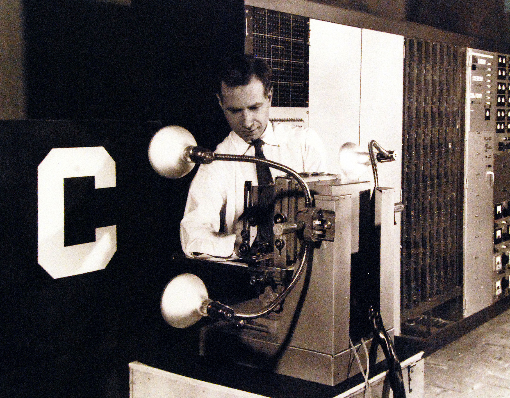

Reality is one.
The course began with a personal experiment: try to understand AI using AI, and follow every question to its source. It moves through astronomy, number theory, logic, materials science, linguistics, philosophy, and computer engineering — not because the author is a polymath, but because those are the places the threads actually go.
The working assumption is Whitehead’s: reality is a process, and everything is connected to everything else. Often the connections appear where you did not expect them. Those are the connections worth finding.
.jpg){kind=link}

_(20897323365).jpg){kind=link}
What this course is — and what it is not.
This is a long, free, interactive digital textbook that traces the ideas behind modern AI from Stone Age tools and the history of mathematics all the way to how large language models work inside. It is hands-on and often mathematically demanding: you build intuition by doing, and by the end you understand the why and the how, not just the what.
This is not a programming tutorial, a “five quick tips” article, or a passive overview you can skim in one evening. It is a library, not a ladder with a single speed. The ten-minute edition exists because most people need a doorway before they commit to the library.
Two histories, one convergence.
The Brief History of AI is the direct intellectual lineage: from the first tally marks and the Antikythera mechanism through Babbage, Boole, the first neural networks, and the transformers. The Untold History of AI goes further back: the Big Bang, the forging of the elements, the first cells, and the long material chain that made computation physically possible.
The most consequential sidetracks are worth naming. Astronomy and precision: astronomers mapping the stars with imperfect data built the optimization tools that let modern models learn from the internet. Technical and philosophical: concepts of logic, language, and Geist migrate from philosophy into billions of trainable parameters. Number and token: the token a transformer predicts is a descendant of Babylonian place value, the Indian zero, the Chinese minus sign, and Leibniz’s binary.
AI is not a sudden invention. It is a convergence.
Statistical methods from astronomy, geometry from land surveying, logic from law and theology, hardware from video games: none were built for AI, and all of them ended up inside it.
Climb up and down the ladder of abstraction.
The course moves constantly between levels. At the bottom are raw bits and weight values. In the middle are operations with names: attention, backpropagation, gradient descent. At the top are broad ideas: topology, meaning, intelligence, ethics. Fluency means being able to move between them without getting lost.
Click a rung below. Each one gives you the same object seen from a different distance — and a reminder of why the level above is not a replacement for the level below.
The ladder of abstraction · demo 01
One machine, five descriptions. Choose a rung.
The concrete base
A model is, at bottom, a very large pile of numbers. Nothing here means anything; the meaning is in the pattern of numbers, and the pattern only appears when you climb a level.
This is the movement the textbook practices on every page: from a philosophical “why” down to a mathematical “how”, and back up again without pretending the lower rung explains everything or that the higher rung is mere decoration.
The course adapts to you.
The full course is too long to consume in one shape, so it adapts. A topic picker dims or tucks sections that do not match your interests. A math-comfort dial decides how much formalism stays visible. A history-depth dial decides how far back the textbook should reach — from “just AI” to the Big Bang. A cluster of reader types (Curious, Student, Engineer, Researcher) and classic types (the mathematician, the builder, the historian, the philosopher, the polymath) load curated paths.
The interactive layer is the point: move the sliders, draw your own data, break the demo, and watch the idea fail or hold. The Atlas places every person, place, institution, and event in the course on one 3-D globe, with threads between them. Curiosity is the primary engine.
What you will be able to do.
By the end of the long course you should be able to explain the inner workings of neural networks, from the first perceptron to the transformer architectures behind ChatGPT; manipulate and optimize data models with the same mathematical principles researchers use; and critically evaluate the societal and philosophical implications, understanding both the technical brilliance and the inherent limitations.
The ten-minute edition has a smaller promise: after one page, you can explain one idea correctly to someone else, and you know where the full argument continues. That is enough for a first visit.
The ladder is the lesson.
Most confusion about AI comes from answering a high-level question with a low-level fact, or the reverse. Knowing which rung you are on is half the understanding.